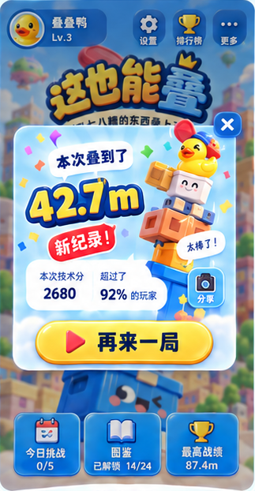

以原 UI 第一排第二屏为唯一目标，保留完整战绩卡的内容、比例与细节。
原图裁切用于审阅，未改动像素。放大不会增加原图没有的细节；这些图片不作为正式 Sprite 导入。
只用来核对结算卡在页面中的占位，不授权恢复已排除的首页功能。

卡片压矮约21%；右侧换成了首页马桶塔；贴纸变厚、气泡轮廓与文案改变；按钮偏短厚；成绩单位同大。这些是造型和构图偏差，不能以“风格接近”作为通过依据。
原始参考不是可直接交付的独立资源包。本轮没有修改运行场景、玩法、素材或构建，不将这份母版称为已完成的游戏还原。